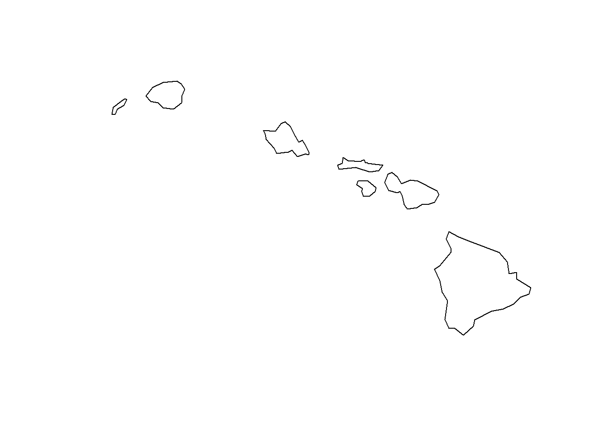

This tutorial will focus on giving you the tools required to import, project, and create spatial datasets. We will work with the sp and sf packages and our friend the tidyverse. Make sure you have these packages installed and loaded.
library(tidyverse)
── Attaching core tidyverse packages ──────────────────────── tidyverse 2.0.0 ──
✔ dplyr 1.1.4 ✔ readr 2.1.5
✔ forcats 1.0.0 ✔ stringr 1.5.1
✔ ggplot2 3.4.4 ✔ tibble 3.2.1
✔ lubridate 1.9.3 ✔ tidyr 1.3.1
✔ purrr 1.0.2
── Conflicts ────────────────────────────────────────── tidyverse_conflicts() ──
✖ dplyr::filter() masks stats::filter()
✖ dplyr::lag() masks stats::lag()
ℹ Use the conflicted package (<http://conflicted.r-lib.org/>) to force all conflicts to become errors
library(sf)
Linking to GEOS 3.11.2, GDAL 3.7.2, PROJ 9.3.0; sf_use_s2() is TRUE
sf is the mama-package of all the spatial packages. sf recently replaced the sp package which you may have used for working with spatial data in R in the past. You can look through the sf documentation to get a sense of all the things you can do with this powerful package. The team behind the sf package created a set of new data classes that integrate our best friend the data.frame with some friends who at times can be very difficult to hang out with: point, polygon, and raster. These new data classes include the following:
sf, the table (data.frame) with feature attributes and feature geometries, which contains sfc, the list-column with the geometries for each feature (record), which is composed of *sfg, the feature geometry of an individual simple feature.
The sf class has a multitude of spatial methods/functions that can be performed on it:
Notice that many functions and methods in sf that operate on spatial data are prefixed by st_, which refers to spatial type; this makes them easily findable by command-line completion.
let’s open some shapefiles! A single shapefile is often split into many files (e.g. .cpg, .dbf, .prj, etc.), the most important of which is the sacred .SHP file. To get all of this info into an organized spatial object in R is easy, and in fact, as is often the case in R, there are multiple packages and functions that will do this for you. Today, we’ll learn how to use the sf package to load a shapefile:
#the first argument to the st_read function is the data source name (or dsn). For .shp files this is the folder where all the many files the shape file is split into live.#the second argument to the st_read function is the layer name. For shape files this will be the file name without the file extensionstates <-st_read("../data/states.shp")
Reading layer `states' from data source
`C:\Users\dillonm\GitHub\adv_gis\labs\lab04\data\states.shp'
using driver `ESRI Shapefile'
Simple feature collection with 51 features and 5 fields
Geometry type: MULTIPOLYGON
Dimension: XY
Bounding box: xmin: -178.2176 ymin: 18.92179 xmax: -66.96927 ymax: 71.40624
Geodetic CRS: NAD83
Lets check the class of states:
class(states)
[1] "sf" "data.frame"
The class of states is sf and data.frame. Meaning states extends (and “is” a) data.frame, but with a single list-column with geometries. sf geometries are held in the sf_column named:
attr(states, "sf_column")
[1] "geometry"
If we print the first three features, we see their attribute values and an abridged version of the geometry
print(states, n =3)
Simple feature collection with 51 features and 5 fields
Geometry type: MULTIPOLYGON
Dimension: XY
Bounding box: xmin: -178.2176 ymin: 18.92179 xmax: -66.96927 ymax: 71.40624
Geodetic CRS: NAD83
First 3 features:
STATE_NAME DRAWSEQ STATE_FIPS SUB_REGION STATE_ABBR
1 Hawaii 1 15 Pacific HI
2 Washington 2 53 Pacific WA
3 Montana 3 30 Mountain MT
geometry
1 MULTIPOLYGON (((-160.0738 2...
2 MULTIPOLYGON (((-122.402 48...
3 MULTIPOLYGON (((-111.4754 4...
#head(states, 3)
The column in the sf data.frame that contains the geometries is a list, of class sfc. We can retrieve the geometry list-column in this case by:
states$geom
Geometry set for 51 features
Geometry type: MULTIPOLYGON
Dimension: XY
Bounding box: xmin: -178.2176 ymin: 18.92179 xmax: -66.96927 ymax: 71.40624
Geodetic CRS: NAD83
First 5 geometries:
The way this is printed is called well-known text. The word MULTIPOLYGON is followed by three parenthesis, because it can consist of multiple polygons, in the form of MULTIPOLYGON(POL1,POL2), where POL1 might consist of an exterior ring and zero or more interior rings, as of (EXT1,HOLE1,HOLE2). Sets of coordinates are held together with parenthesis, so we get ((crds_ext)(crds_hole1)(crds_hole2)) where crds_ is a comma-separated set of coordinates of a ring.
This is easier to see if we plot the polygon:
plot(states_geom[[1]])

This MULTIPOLYGON is made up of 7 polygons. If you count the bracketed sets of coordinates above, there are 7 sets.
Spatial objects have a series of attributes that describe things specific to spatial data such projections and bounding boxes. You can check the attributes of sfc objects using the attributes function.
Here you can see the bounding box of the shape file. This is a matrix of bounding box coordinates with xmin and xmax showing the longitude (x-axis) and ymin, ymax showing the latitude (y-axis). You can also see information about the data’s coordinate reference system. You can access each of these attributes directly using sf functions.
People tend to hate projections and generally don’t understand them very well. It is, however, VERY important that you project your data correctly. If you fail to do this, it’s highly likely that your spatial analyses will be wrong. So let’s learn how this stuff works.
Maps tend to be two-dimensional; the Earth is not. A coordinate system is a way to locate everything on Earth’s surface in x and y space. The way we portray (pseudo-)spherical Earth on a flat surface is by using a projection. Each projection is associated with a particular coordinate system. There are a bazillion coordinate systems, and each coordination system comes with strong assumptions and distortions (and fan-base):
Geographic Coordinate System (GCS): good ol’ latitude and longitude (degrees, minutes, seconds); we think of data in GCS as unprojected;
Universal Transverse Mercator (UTM): lots of zones to choose from, Utah sits in 12N;
State Plane Coordinate System: some states have their own systems, i.e. North Carolina Coordinate System
National systems: If working in another country, check out country-specific projections.
Each coordinate system is tied to a datum. This is essentially a reference point, the starting point from which coordinates are measured (i.e. lat and lon are based on the equator and prime meridian). In R we can access the projection information for a spatial object using the crs attribute of the object:
st_crs(states_geom) #view the data projection
Coordinate Reference System:
User input: NAD83
wkt:
GEOGCRS["NAD83",
DATUM["North American Datum 1983",
ELLIPSOID["GRS 1980",6378137,298.257222101,
LENGTHUNIT["metre",1]]],
PRIMEM["Greenwich",0,
ANGLEUNIT["degree",0.0174532925199433]],
CS[ellipsoidal,2],
AXIS["latitude",north,
ORDER[1],
ANGLEUNIT["degree",0.0174532925199433]],
AXIS["longitude",east,
ORDER[2],
ANGLEUNIT["degree",0.0174532925199433]],
ID["EPSG",4269]]
Coordinate reference systems (CRS) are like measurement units for coordinates: they specify which location on Earth a particular coordinate pair refers to. sfc objects have two attributes to store a CRS:epsg and proj4string. proj4string is a generic, string-based description of a CRS, understood by the PROJ library. It defines projection types and (often) defines parameter values for particular projections, and hence can cover an infinite amount of different projections. This library (also used by GDAL) provides functions to convert or transform between different CRS. epsg is the integer ID for a particular, known CRS that can be resolved into a proj4string. Some proj4string values can resolved back into their corresponding epsg ID, but this does not always work.
The importance of having epsg values stored with data besides proj4string values is that the epsg refers to particular, well-known CRS, whose parameters may change (improve) over time; fixing only the proj4string may remove the possibility to benefit from such improvements, and limit some of the provenance of datasets, but may help reproducibility.
Our data is currently in the WGS84 Geographic Coordinate System which plots locations on a sphere using longitude and latitude (but does not project these coordinates into two-dimensional space).
We get that long string by searching for the projection on epsg.io and clicking the PROJ.4 link.
If we have any plans to use the spatial data to compute distance or area, then we need to project our data. This is fairly straightforward in R. Say we want to reproject this dataset into USA Contiguous Albers Equal Area Conic:
states_conic <-st_transform(states, CRS("+proj=aea +lat_1=29.5 +lat_2=45.5 +lat_0=37.5 +lon_0=-96 +x_0=0 +y_0=0 +ellps=GRS80 +datum=NAD83 +units=m +no_defs"))# HINT: what is the epsg for albers equal area conic? how could statement be easier?
Don’t forget that the map projection you use strongly impacts the way you visualize and analyze your data (see here or here).
4. Spatial data and dplyr
Since sf objects are data.frames with extra spatial data, all of our dplyr tools apply! Want to know how many states are in each sub-region?
states %>%as.data.frame() %>%group_by(SUB_REGION) %>%summarize(n_states =n())
# A tibble: 9 × 2
SUB_REGION n_states
<chr> <int>
1 East North Central 5
2 East South Central 4
3 Middle Atlantic 3
4 Mountain 8
5 New England 6
6 Pacific 5
7 South Atlantic 9
8 West North Central 7
9 West South Central 4
Notice, however, that the output of this dplyring is a data.frame, not a sp object. To keep the subset and cleaned shapefile in shapefile form you can use dplyr verbs directly on sf objects without collapsing them to a data.frame! This means we can use dplyr tools like filter() to directly change our shapefiles:
Let’s say I’m a volcanologist and I find a really cool dataset describing all eruptions on Earth during the Holocene. The data is stored in a .csv document. We know how to open the .csv in R and inspect its contents:
volcano <-read.csv('../data/volcano.csv')glimpse(volcano) #another way to view a data.frame summary
But we’re not here to learn how to work with .csv data … we have now graduated to spatial data! So how do we turn our .csv into a MULTIPOINT spatial object (a set of points in the sf geometry; because we’re dealing with coordinates of eruptions)?
Ohhh don’t you want to transform this ugly base R plot into something better. Here’s a simple plot with ggplot and some data from the rnaturalearth package:
world <-ne_countries(scale ="medium", returnclass ="sf")ggplot() +geom_sf(data = world) +geom_sf(data = volcano_sf, size =1.5, shape =23, fill ="darkred") +labs(title ="Global Volcano Eruptions During the Holocene")
You can use the shape =, size =, and fill = arguments in any ggplot function to coustomize the look of point symbols. You can find a list of commonly used point symbols here.
Polygons
Most of the polygon data you will need has already been built by someone else, so we do not often build polygons from scratch. There are however instances when this might be a useful skill to master. For example defining study area boundaries.
To do this in R, we have to build each individual polygon and bundle them all together. Let’s start by building a set of simple polygons describing the outline of two study areas (in this example, the coordinates are arbitrary; in the real world, you’d have actual coordinates). The rbind() function pulls together each set of coordinates (i.e. c(1,1)) and binds them together in separate rows to create a mini-matrix of coordinates. Note that the order in which you list the coordinates is the order in which R will draw the polygons so be sure to list them in the correct order.
site1 <-st_polygon(list(rbind(c(0,0), c(1,0), c(3,2), c(2,4), c(1,4), c(0,0))))site2 <-st_polygon(list(rbind(c(3,0), c(4,0), c(4,1), c(3,1), c(3,0))))#Now, let’s bind the individual Polygon objects into a spatial polygon objectsites <-st_sfc(site1, site2)plot(sites)
Spatial polygons are cool and all, but polygons with attribute data are much cooler. How do we add data to our new spatial polygons? sf makes it easy to turn spatial data into spatial data.frames.
Now we can plot our sites to display an attribute! For instance the number of observations at each site.
plot(pol_sf["Observations"])
You can apply the same basic principles to make each of the spatial geometry types in sf:
POINT: zero-dimensional geometry containing a single point
LINESTRING: sequence of points connected by straight, non-self intersecting line pieces; one-dimensional geometry
POLYGON: geometry with a positive area (two-dimensional); sequence of points form a closed, non-self intersecting ring; the first ring denotes the exterior ring, zero or more subsequent rings denote holes in this exterior ring
MULTIPOINT: set of points; a MULTIPOINT is simple if no two Points in the MULTIPOINT are equal
MULTILINESTRING: set of linestrings
MULTIPOLYGON: set of polygons
6. Writing out spatial data
Writing out spatial data using the sf package takes place in the same fashion as reading in spatial data. Remember st_read() from back when you started this exercise? To write out a spatial data file (like a shape file) you just use st_write().
Let’s write out the polygon dataframe we created above as a shapefile.
st_write(pol_sf, "../data/imaginary_sites.shp") # this will write output to your working directory
Writing layer `imaginary_sites' to data source
`../data/imaginary_sites.shp' using driver `ESRI Shapefile'
Writing 2 features with 2 fields and geometry type Polygon.
# st_write(pol_sf, dsn = "..data/", layer = "imaginary_sites.shp", driver = "ESRI Shapefile") #you can also specify a folder to write the shape file using the dsn argument
If we repeat this code, we would get an error message that the file already exists, but we can force a file overwrite by using:
Deleting layer `imaginary_sites' using driver `ESRI Shapefile'
Writing layer `imaginary_sites' to data source
`../data/imaginary_sites.shp' using driver `ESRI Shapefile'
Writing 2 features with 2 fields and geometry type Polygon.
We have written out a classic ESRI Shapefile but there are lots of other drivers you can use found here.
7. More sf functions: finding the distance from NY to UT
sf has some useful functions for simple spatial operations. The code below uses the st_centroid() function to identify points located in the center of NY and UT and the st_distance() function to calculate the distance between those points. Notice that the paste() function is used to add the output value from st_distance() to the plot title.
NY <- states_conic %>%filter(STATE_NAME =="New York")UT <- states_conic %>%filter(STATE_NAME =="Utah")`%notin%`<-Negate(`%in%`) #create an operator so we can exclude locations using filtercont_US <- states_conic %>%filter(STATE_NAME %notin%c("Alaska","Hawaii"))ggplot() +geom_sf(data = cont_US) +geom_sf(data =rbind(st_centroid(NY), st_centroid(UT))) +#plot the centroids for NY and UTlabs(title =paste("The distance between NY and UT is", as.integer(st_distance(st_centroid(NY), st_centroid(UT))*0.001), "km"))